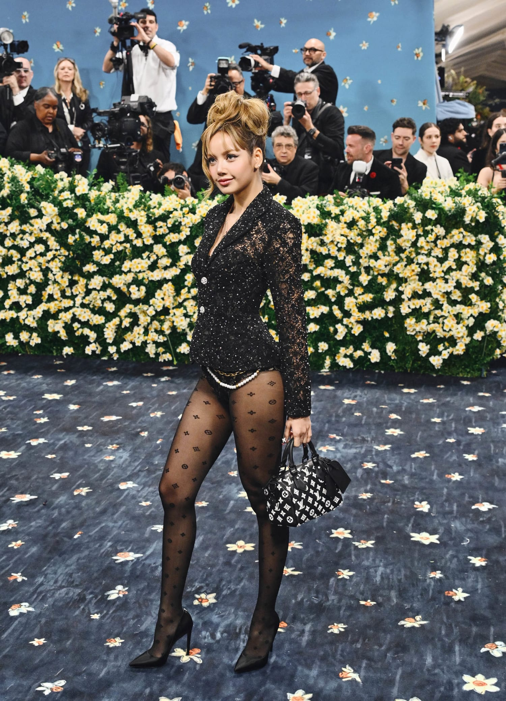

Lalisa Monobal



Stage name: Lisa
Birth name: Lalisa Monobal
Nicknames: Lili, Lalice, Laliz
Position: Main dancer, Lead rapper
Birthday: March 27, 1997
Zodiac sign: Aries
Birthplace: Buriram, Thailand
Height: 5'5.6" (166.5 cm)
Facts:
- She was born in Buriram Province and moved to Bangkok at age three
- She can play guitar, piano, and ukulele
- Her stepfather is Marco Brueschweiler who is a top certified Swiss chef
- She was the only person accepted into YG at the audition in Thailand
- She is childhood friends with GOT7's BamBam
- She trained for 5 years and 3 months
- She has 5 cats: Leo, Luca, Lily, Louis, and Lego
- She has 1 dog: Love
- She became a trainee in middle school and has lived in Korea since
- She was the second member to be revealed
- She can speack Thai, Korean, English, Japanese, and basic Chinese
- The other members of BlackPink sat that she is really playful and mischievous off stage
- She was invested as an Honorary Member of the Order of the British Empire (MBE) by King Charles III with the other Blackpink members
Solo Activites:
- Dance mentor on Youth with You season 2 and season 3.
- Debut single album Lalisa
- Collaborated with DJ Snake, Ozuna, and Megan Thee Stallion on "SG"
- Featured on Taeyang's "Shoong!"
- Performed at Crazy Horse Paris in September 2023.
- Launched her own artist management company Lloud
- Performed at the 2024 MTV Video Music Awards
- Performed at the Victoria's Secrect Fashion Show 2024
- Made her acting debut as Mook in The White Lotus
- Debut solo studio album Alter Ego
- Performed at Coachella 2025
- Brand ambassador of Bulgari
- House ambassador of Louis Vuitton
- Attended the 2025 Met Gala